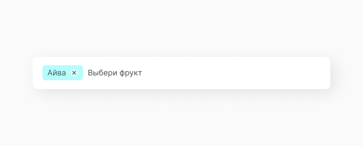
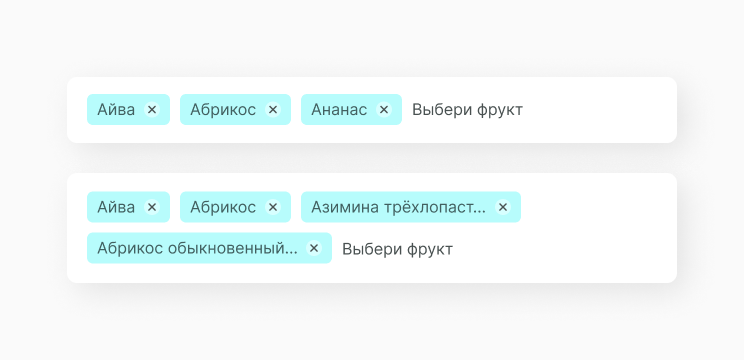
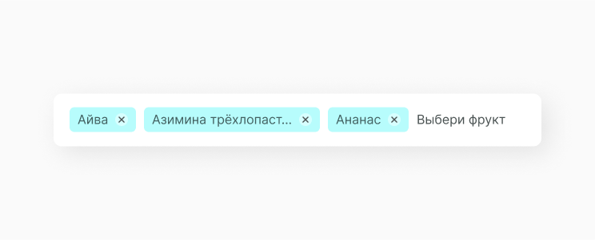

Multiselect Input
MultiselectInput это вид компонента select, который позволяет пользователю выбратьнесколько пунктов из списки выпадающей опции.
В основном мультиселект инпут используют в различных формах входа или заполнения данных, когда нужно сделать множественный выбор при заполнении данных, поиске по тегам или фильтрации.
Структура компонента
Мультиселект состоит из поля инпута с предзаполненным контекстным текстом, иконки шеврона, которая роворачивается во время пользовательского действия, списска с опциями, строку которой необходимо выбрать и в выбранном состоянии указанными чипсами. Подробнее про соновную структуру инпута смори тут.
Chip
Основа отличия мультиселекта от обычного селекта в том, что выбранные строки из опции выводяться в инпут в виде чипсов. Эти элементы отображают выбранный контент и имеют иконку удаления.
 Состояние компонента
Исходя из структуры, мы можем выявить несколько состояний компонента с данными и без них. Так как заполненный инпут отображает не строку, а отдельный компонент или несколько компонентов в виде чипсов. Мильтиселект изменяется следующим образом:
Затем в выбраном состоянии появляется чипс. Так как выбираемая строка может быть слишком длинной, чтобы поместиться в инпут целиком, мы ограничиваем максимальную длину чипса и срезаем выбранный текст.
Количество строк в опции может быть большим, соответсвенно и выбранных чипсов будет много. Проблема размещения этих компонентов в инпуте решается таким образом.
Реализация
Компонент должен принимать параметры: type (единичный или множественный тип), placeholder, current selection, option list, handleChange (коллбек изменения поля).
Ссылки
Также для тебя ссылки на Фигму с дизайн системой и GitHub с библиотекой компонентов.
Составляющие
Этот компонент часто выводится в следующих компонентах
Этот компонент часто выводится в следующих компонентах